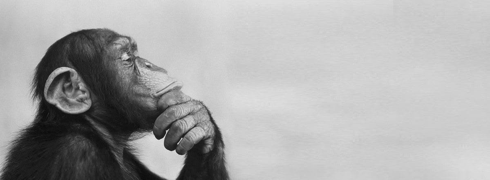

Monster is a Japanese manga series created by Naoki Urasawa. It is a suspenseful story about Dr. Kenzo Tenma, a talented brain surgeon living in Germany.
His life changes after he saves a young boy named Johan instead of an important politician.
Years later, Dr. Tenma learns that Johan has become a dangerous criminal. Tenma begins a journey across Germany and other parts of Europe to find Johan and stop him.
The story includes mystery, crime, psychological drama, and many interesting characters.
Monster is known for its serious story, detailed characters, and surprising plot twists.
It explores important ideas such as justice, morality, identity, and the meaning of good and evil.
© Monster Website